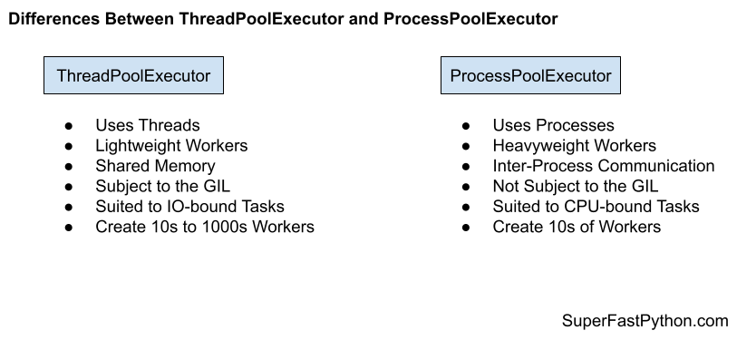

ThreadPoolExecutor vs ProcessPoolExecutor in Python
You can use ThreadPoolExecutor for IO-bound tasks and ProcessPoolExecutor for CPU-bound tasks.
In this tutorial, you will discover the difference between the ThreadPoolExecutor and the ProcessPoolExecutor and when to use each in your Python projects.
Let's get started.
What Is ThreadPoolExecutor
The ThreadPoolExecutor class provides a thread pool in Python.
A thread is a thread of execution.
Each thread belongs to a process and can share memory (state and data) with other threads in the same process. In Python, like many modern programming languages, threads are created and managed by the underlying operating system, so-called system-threads or native threads.
You can create a thread pool by instantiating the class and specifying the number of threads via the max_workers argument; for example:
...
# create a thread pool
executor = ThreadPoolExecutor(max_workers=10)
You can then submit tasks to be executed by the thread pool using the map() and the submit() functions.
The map() function matches the built-in map()function and takes a function name and an iterable of items. The target function will then be called for each item in the iterable as a separate task in the process pool. An iterable of results will be returned if the target function returns a value.
The call to map() does not block, but each result yielded in the returned iterator will block until the associated task is completed.
For example:
...
# call a function on each item in a list and process results
for result in executor.map(task, items):
# process result...
You can also issue tasks to the pool via the submit() function that takes the target function name and any arguments and returns a Future object.
The Future object can be used to query the status of the task (e.g. done(), running(), or cancelled()), and can be used to get the result or exception raised by the task once completed. The calls to result() and exception() will block until the task associated with the Future is done.
For example:
...
# submit a task to the pool and get a future immediately
future = executor.submit(task, item)
# get the result once the task is done
result = future.result()
Once you are finished with the thread pool, it can be shut down by calling the shutdown() function in order to release all of the worker threads and their resources.
For example:
...
# shutdown the thread pool
executor.shutdown()
The process of creating and shutting down the thread pool can be simplified by using the context manager that will automatically call the shutdown() function.
For example:
...
# create a thread pool
with ThreadPoolExecutor(max_workers=10) as executor:
# call a function on each item in a list and process results
for result in executor.map(task, items):
# process result...
# ...
# shutdown is called automatically
For a complete guide to the ThreadPoolExecutor, see:
Now that we are familiar with the ThreadPoolExecutor, let's review the ProcessPoolExecutor.
What Is ProcessPoolExecutor
The ProcessPoolExecutor class provides a process pool in Python.
A process is an instance of a computer program. A process has a main thread of execution and may have additional threads. A process may also spawn or fork child processes. In Python, like many modern programming languages, processes are created and managed by the underlying operating system.
You can create a process pool by instantiating the class and specifying the number of processes via the max_workers argument; for example:
...
# create a process pool
executor = ProcessPoolExecutor(max_workers=10)
You can then submit tasks to be executed by the process pool using the map() and the submit() functions.
The map() function matches the built-in map() function and takes a function name and an iterable of items. The target function will then be called for each item in the iterable as a separate task in the process pool. An iterable of results will be returned if the target function returns a value.
The call to map() does not block, but each result yielded in the returned iterator will block until the associated task is completed.
For example:
...
# call a function on each item in a list and process results
for result in executor.map(task, items):
# process result...
You can also issue tasks to the pool via the submit() function that takes the target function name and any arguments and returns a Future object.
The Future object can be used to query the status of the task (e.g. done(), running(), or cancelled()) and can be used to get the result or exception raised by the task once completed. The calls to result() and exception() will block until the task associated with the Future is done.
For example:
...
# submit a task to the pool and get a future immediately
future = executor.submit(task, item)
# get the result once the task is done
result = future.result()
Once you are finished with the process pool, it can be shut down by calling the shutdown() function in order to release all of the worker processes and their resources.
For example:
...
# shutdown the process pool
executor.shutdown()
The process of creating and shutting down the process pool can be simplified by using the context manager that will automatically call the shutdown() function.
For example:
...
# create a process pool
with ProcessPoolExecutor(max_workers=10) as executor:
# call a function on each item in a list and process results
for result in executor.map(task, items):
# process result...
# ...
# shutdown is called automatically
For more on the ProcessPoolExecutor, see the guide:
Now that we are familiar with the ThreadPoolExecutor and ProcessPoolExecutor, let's compare and contrast the two classes.
Comparison of ThreadPoolExecutor vs. ProcessPoolExecutor
Since we are familiar with the ThreadPoolExecutor and ProcessPoolExecutor classes.
Similarities Between ThreadPoolExecutor and ProcessPoolExecutor
The ThreadPoolExecutor and ProcessPoolExecutor classes are very similar; let's review some of the most important similarities.
1. Both Classes Extend Executor
Both classes extend the concurrent.futures.Executor class.
This is an abstract class that defines an interface for executing asynchronous tasks, including the functions:
submit()map()shutdown()
As such, both classes have the same life-cycle in terms of creating the pool, executing tasks, and shutting down.
Additionally, both classes sit alongside the Executor in the concurrent.futures module namespace.
This similarity defines all other similarities between the classes.
2. Both Classes Manage Pools of Workers
Both classes manage pools of workers for executing ad hoc tasks.
Neither class imposes limits on the types of tasks executed, such as:
- Task duration: long or short tasks.
- Task type: homogeneous or heterogeneous tasks.
In this way, both classes offer pools of generic task executors.
3. Both Classes Use Futures
Both classes return instances of the Future class when calling submit().
This provides the same interface for querying the status and retrieving results from running tasks.
Additionally, it means that both classes are able to make use of the same utility module functions such as wait() and as_completed() when managing collections of tasks via their Future objects.
These similarities mean that if you learn how to use one class, you know how to use the other class, for the most part. It also means that program code could be made agnostic to the specific Executor implementation and switch between processes and threads.
Differences Between ThreadPoolExecutor and ProcessPoolExecutor
The ThreadPoolExecutor and ProcessPoolExecutor classes are also quite different; let's review some of the most important differences.
1. Threads vs. Processes
Perhaps the most important difference is the type of workers used by each class.
As their names suggest, the ThreadPoolExecutor uses threads internally, whereas the ProcessPoolExecutor uses processes.
A process has a main thread and may have additional threads. A thread belongs to a process. Both processes and threads are features provided by the underlying operating system.
A process is a higher level of abstraction than a thread.
This difference defines all other differences between the two classes.
2. Shared Memory vs. Inter-Process Communication
The classes have important differences in the way they access shared state.
Threads can share memory within a process.
This means that worker threads in the ThreadPoolExecutor can access the same data and state. These might be global variables or data shared via function arguments. As such, sharing state between threads is straightforward.
Processes do not have shared memory like threads.
Instead, state must be serialized and transmitted between processes, called inter-process communication. Although it occurs under the covers, it does impose limitations on what data and state can be shared and adds overhead to sharing data.
As such, sharing state between threads is easy and lightweight, and sharing state between processes is harder and heavyweight.
3. GIL vs. no GIL
Multiple threads within a ThreadPoolExecutor are subject to the global interpreter lock (GIL), whereas multiple child processes in the ProcessPoolExecutor are not subject to the GIL.
The GIL is a programming pattern in the reference Python interpreter (e.g. CPython, the version of Python you download from python.org).
It is a lock in the sense that it uses synchronization to ensure that only one thread of execution can execute instructions at a time within a Python process.
This means that although we may have multiple threads in a ThreadPoolExecutor, only one thread can execute at a time.
The GIL is used within each Python process, but not across processes. This means that multiple child processes within a ProcessPoolExecutor can execute at the same time and are not subject to the GIL.
This has implications for the types of tasks best suited to each class.
Summary of Differences
It may help to summarize the differences between the ThreadPoolExecutor and the ProcessPoolExecutor.
ThreadPoolExecutor
- Uses Threads, not processes.
- Lightweight workers, not heavyweight workers.
- Shared Memory, not inter-process communication.
- Subject to the GIL, not parallel execution.
- Suited to IO-bound Tasks, not CPU-bound tasks.
- Create 10s to 1,000s Workers, not really constrained.
ProcessPoolExecutor
- Uses Processes, not threads.
- Heavyweight Workers, not lightweight workers.
- Inter-Process Communication, not shared memory.
- Not Subject to the GIL, not constrained to sequential execution.
- Suited to CPU-bound Tasks, probably not IO-bound tasks.
- Create 10s of Workers, not 100s or 1,000s of tasks.
The figure below provides a helpful side-by-side comparison of the key differences between the two classes.

How to Choose ThreadPoolExecutor or ProcessPoolExecutor
When should you use the ThreadPoolExecutor and when should you use the ProcessPoolExecutor? Let's review some useful suggestions.
Firstly, let's look at when you should consider using workers in a thread pool or process pool over using custom objects such as threading.Thread and multiprocessing.Process.
When to Use Executor Worker Pools
In this section, we will look at some general cases where it is a good fit to use worker pools, and where it isn't.
Use Executors When...
- Your tasks can be defined by a pure function that has no state or side effects.
- Your task can fit within a single Python function, likely making it simple and easy to understand.
- You need to perform the same task many times, e.g. homogeneous tasks.
- You need to apply the same function to each object in a collection in a for-loop.
Executors work best when applying the same pure function on a set of different data (e.g. homogeneous tasks, heterogeneous data).
This makes code easier to read and debug. This is not a rule, just a gentle suggestion.
Don't Use Executors When...
- You have a single task; consider using the
ThreadorProcessclass with the target argument. - You have long running tasks, such as monitoring or scheduling; consider extending the
ThreadorProcessclass. - Your task functions require state; consider extending the
ThreadorProcessclass. - Your tasks require coordination; consider using a
ThreadorProcessand patterns like aBarrierorSemaphore. - Your tasks require synchronization; consider using a
ThreadorProcessclass and locks. - You require a thread trigger on an event; consider using the
ThreadorProcessclass.
The sweet spot for Executors is in dispatching many similar tasks, the results of which may be used later in the program.
Tasks that don't fit neatly into this summary are probably not a good fit for thread pools. This is not a rule, just a gentle suggestion.
Now that we are familiar with the general types of tasks suited to Executor worker pools, let's look at the types of tasks suited to the ThreadPoolExecutor specifically.
When to Use the ThreadPoolExecutor
The ThreadPoolExecutor is powerful and flexible, although is not suited for all situations where you need to run a background task.
In this section, we'll look at broad classes of tasks and why they are or are not appropriate for the ThreadPoolExecutor.
Use ThreadPoolExecutor for IO-Bound Tasks
You should use the ThreadPoolExecutor for IO-bound tasks in Python in general.
An IO-bound task is a type of task that involves reading from or writing to a device, file, or socket connection.
The operations involve input and output (IO), and the speed of these operations is bound by the device, hard drive, or network connection. This is why these tasks are referred to as IO-bound.
CPUs are really fast. Modern CPUs, like a 4GHz, can execute 4 billion instructions per second, and you likely have more than one CPU in your system.
Doing IO is very slow compared to the speed of CPUs.
Interacting with devices, reading and writing files, and socket connections involve calling instructions in your operating system (the kernel), which will wait for the operation to complete. If this operation is the main focus for your CPU, such as executing in the main thread of your Python program, then your CPU is going to wait many milliseconds, or even many seconds, doing nothing.
That is potentially billions of operations that it is prevented from executing.
We can free-up the CPU from IO-bound operations by performing IO-bound operations on another thread of execution. This allows the CPU to start the process and pass it off to the operating system (kernel) to do the waiting and free it up to execute in another application thread.
There's more to it under the covers, but this is the gist.
Therefore, the tasks we execute with a ThreadPoolExecutor should be tasks that involve IO operations.
Examples include:
- Reading or writing a file from the hard drive.
- Reading or writing to standard output, input, or error (stdin, stdout, stderr).
- Printing a document.
- Downloading or uploading a file.
- Querying a server.
- Querying a database.
- Taking a photo or recording a video.
- And so much more.
If your task is not IO-bound, perhaps threads and using a thread pool is not appropriate.
Don't Use ThreadPoolExecutor for CPU-Bound Tasks
You should probably not use the ThreadPoolExecutor for CPU-bound tasks in general.
A CPU-bound task is a type of task that involves performing a computation and does not involve IO.
CPUs are very fast, and we often have more than one CPU core on a single chip in modern computer systems. We would like to perform our tasks and make full use of multiple CPU cores in modern hardware.
Using threads and thread pools via the ThreadPoolExecutor class in Python is probably not a path toward achieving this end.
This is because of a technical reason behind the way the Python interpreter was implemented. The implementation prevents two Python operations executing at the same time inside the interpreter, and it does this with a master lock that only one thread can hold at a time called the global interpreter lock, or GIL.
The GIL is not evil and is not frustrating; it is a design decision in the Python interpreter that we must be aware of and consider in the design of our applications.
I said that you "probably" should not use threads for CPU-bound tasks.
You can and are free to do so, but your code will not benefit from concurrency because of the GIL. It will likely perform worse because of the additional overhead of context switching (the CPU jumping from one thread of execution to another) introduced by using threads.
Additionally, the GIL is a design decision that affects the reference implementation of Python. If you use a different implementation of the Python interpreter (such as PyPy, IronPython, Jython, and perhaps others), then you may not be subject to the GIL and can use threads for CPU bound tasks directly.
Now that we are familiar with the types of tasks suited to the ThreadPoolExecutor, let's look at the types of tasks suited to the ProcessPoolExecutor specifically.
When to Use the ProcessPoolExecutor
The ProcessPoolExecutor is powerful and flexible, although is not suited for all situations where you need to run a background task.
In this section, we'll look at broad classes of tasks and why they are or are not appropriate for the ProcessPoolExecutor.
Use the ProcessPoolExecutor for CPU-Bound Tasks
You should probably use processes for CPU-bound tasks.
A CPU-bound task is a type of task that involves performing a computation and does not involve IO.
The operations only involve data in main memory (RAM) or cache (CPU cache) and performing computations on or with that data. As such, the limit on these operations is the speed of the CPU. This is why we call them CPU-bound tasks.
Examples include:
- Calculating points in a fractal.
- Estimating Pi
- Factoring primes.
- Parsing HTML, JSON, etc. documents.
- Processing text.
- Running simulations.
CPUs are very fast, and we often have more than one CPU. We would like to perform our tasks and make full use of multiple CPU cores in modern hardware.
Using processes and process pools via the ProcessPoolExecutor class in Python is probably the best path toward achieving this end.
Don't Use ProcessPoolExecutor for IO-Bound Tasks
You can use processes for IO-bound tasks, although the ThreadPoolExecutor may be a better fit.
An IO-bound task is a type of task that involves reading from or writing to a device, file, or socket connection.
Processes can be used for IO-bound tasks in the same way that threads can be, although there are major limitations to using processes.
- Processes are heavyweight structures; each has at least a main thread.
- All data sent between processes must be serialized.
- The operating system may impose limits on the number of processes you can create.
When performing IO-operations, we very likely will need to move data between worker processes back to the main process. This may be costly if there is a lot of data as the data must be pickled at one end and unpickled at the other end. Although this data serialization is performed automatically under the covers, it adds a computational expense to the task.
Additionally, the operating system may impose limits on the total number of processes supported by the operating system, or the total number of child processes that can be created by a process. For example, the limit in Windows is 61 child processes. When performing tasks with IO, we may require hundreds or even thousands of concurrent workers (e.g. each managing a network connection), and this may not be feasible or possible with processes.
Nevertheless, the ProcessPoolExecutor may be appropriate for IO-bound tasks if the requirement on the number of concurrent tasks is modest (e.g. less than 100) and the data sharing requirements between processes is also modest (e..g processes don't share much or any data).
Takeaways
You now know the difference between ThreadPoolExecutor and ProcessPoolExecutor and when to use each.